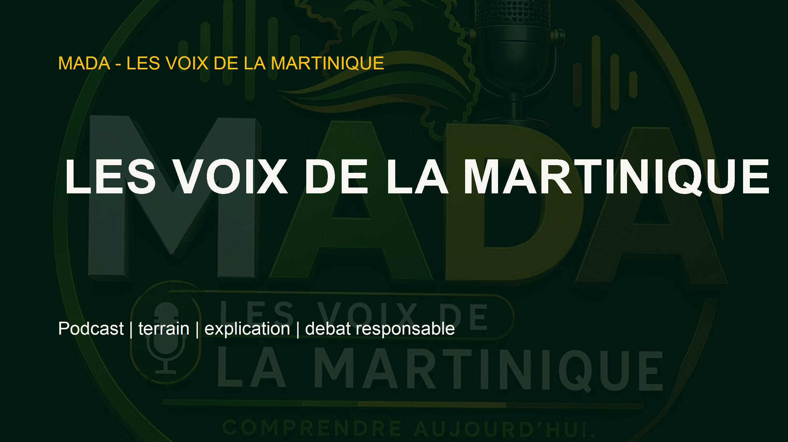
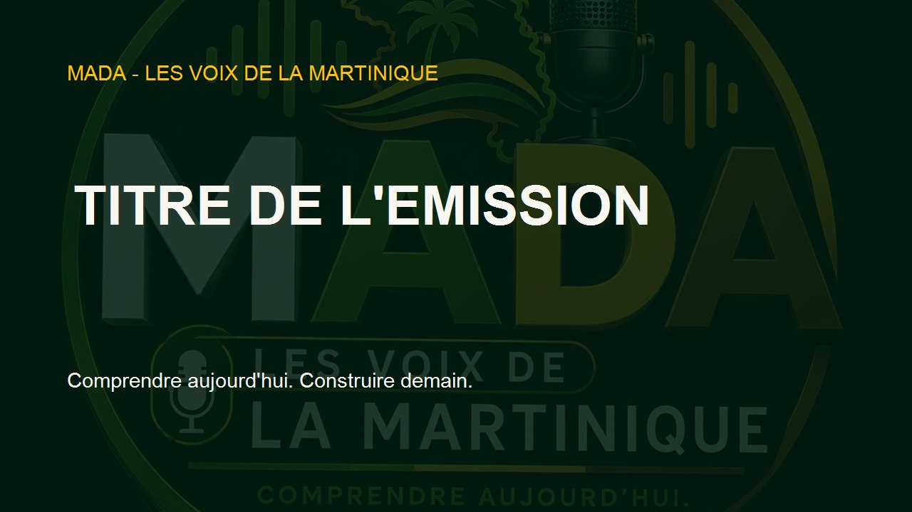
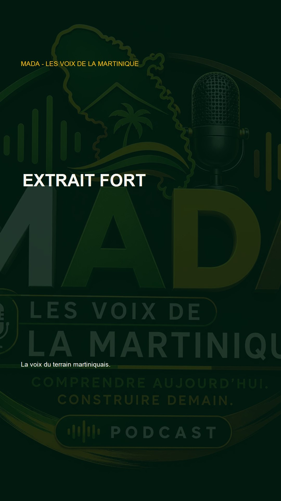

Cover podcast
3000 x 3000 px. Utilisable pour Spotify, Apple Podcasts, Deezer et Amazon Music.
Ouvrir le fichierRessources officielles
Des formats prêts pour lancer Les Voix sur le site, YouTube, Spotify et les réseaux.
Cette page centralise les visuels, les spécifications techniques, le flux RSS modèle et les règles d'usage pour produire et diffuser les contenus MADA Les Voix de la Martinique avec cohérence.

Visuels
Ces ressources servent de point de départ. Elles doivent être adaptées avec les titres, dates, invités et sujets de chaque épisode.
3000 x 3000 px. Utilisable pour Spotify, Apple Podcasts, Deezer et Amazon Music.
Ouvrir le fichier
1280 x 720 px. Base pour les émissions longues et extraits horizontaux.
Ouvrir le fichier
1080 x 1920 px. Format vertical pour extraits, annonces et citations.
Ouvrir le fichier2560 x 1440 px. Habillage de chaîne, page ou dossier de lancement.
Ouvrir le fichierSpécifications
Format 16:9, miniature 1280 x 720, titre clair, description avec liens vers la charte, le planning et la contribution citoyenne.
MP3 propre, titre complet, description, date de publication, durée, taille du fichier et image carrée 3000 x 3000.
1080 x 1920, sous-titres lisibles, phrase forte, source ou contexte, appel à consulter l'épisode complet.
Objectif, contexte, conducteur, invités, sources, liens internes et appel à proposer un sujet.
RSS & plateformes
Le flux RSS modèle existe déjà. Il doit être complété avec un vrai fichier audio avant toute soumission aux plateformes.
Le fichier assets/media/les-voix/podcast-feed-template.xml prépare les métadonnées principales du podcast.
Soumettre le flux après hébergement du premier MP3.
Vérifier image carrée, auteur, catégorie et email propriétaire.
Créer une playlist ou une chaîne Les Voix avec bannière et miniatures cohérentes.
Publier une fiche par épisode avec sources, résumé et appels à contribution.
Règles d'usage
Vert profond, doré, blanc et touches marron. Garder un contraste fort et une lisibilité immédiate.
Un titre doit être compris en moins de cinq secondes, surtout sur mobile.
Le ton peut être ferme, mais il doit rester digne, responsable et conforme à la charte éditoriale.
Chaque visuel doit rappeler la Martinique : carte, paysage, commune, terrain, voix ou réalité locale.
Prochaine étape
Le kit permet d'enregistrer, habiller, publier et décliner le pilote dans une logique professionnelle : un épisode long, une version audio, plusieurs extraits courts et une fiche de référence sur le site.
{kind=link}
{kind=link}
{kind=link}
{kind=link}